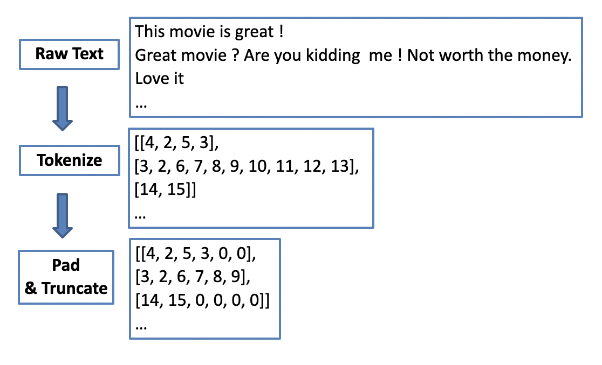

12.4 Recurrent Neural Network
Traditional neural networks don’t have a framework that can handle sequential events where the later events are based on the previous ones. For example, map an input audio clip to a text transcript where the input is voice over time, and the output is the corresponding sequence of words over time. Recurrent Neural Network is a deep-learning model that can process this type of sequential data.
The recurrent neural network allows information to flow from one step to the next with a repetitive structure. Figure 12.20 shows the basic chunk of an RNN network. You combine the activated neuro from the previous step with the current input \(x^{<t>}\) to produce an output \(\hat{y}^{<t>}\) and an updated activated neuro to support the next input at \(t+1\).
FIGURE 12.20: Recurrent Neural Network Unit
So the whole process repeats a similar pattern. If we unroll the loop:
FIGURE 12.21: An Unrolled Recurrent Neural Network
The chain-like recurrent nature makes it the natural architecture for sequential data. There is incredible success applying RNNs to this type of problems:
- Machine translation
- Voice recognition
- Music generation
- Sentiment analysis
A trained CNN accepts a fixed-sized vector as input (such as \(28 \times 28\) image) and produces a fixed-sized vector as output (such as the probabilities of being one the ten digits). RNN has a much more flexible structure. It can operate over sequences of vectors and produces sequences of outputs and they can vary in size. To understand what it means, let’s look at some RNN structure examples.

The rectangle represents a vector and the arrow represents matrix multiplications. The input vector is in green and the output vector is in blue. The red rectangle holds the intermediate state. From left to right:
- one-to-one: model takes a fixed size input and produces a fixed size output, such as CNN. it is not sequential.
- one-to-many: model takes one input and generate a sequence of output, such as the music generation.
- many-to-one: model takes a sequence of input and produces a single output, such as sentiment analysis.
- many-to-many: model takes a sequence of input and produces a sequence of output. The input size can be the same with the output size (such as name entity recognition) or it can be different (such as machine translation).
12.4.1 RNN Model
To further understand the RNN model, let’s look at an entity recognition example. Assume you want to build a sequence model to recognize the company or computer language names in a sentence like this: “Use Netlify and Hugo”. It is a name recognition problem which is used by the research company to index different company names in the articles. For tasks like this, we need a model that can learn and share the learning across different texts. The position of the word has important information about the word. For example, the word before “to” is more likely to be a verb than a noun. It is also used in material science to tag chemicals mentioned in the most recent journals to find any indication of the next research topic.
Given input sentence x, you want a model to produce one output for each word in x that tells you if that word is the name for something. So in this example, the input is a sequence of 5 words including the period in the end. The output is a sequence of 0/1 with the same length that indicates whether the input word is a name (1) or not (0). We use superscript \(<t>\) to denote the element position of input and output; use superscript \((i)\) to denote the \(i^{th}\) sample (you will have different sentences in the training data); Use \(T_x^{(i)}\) to denote the length of \(i^{th}\) input, \(T_y^{(i)}\) for output. In this case, \(T_x^{(i)}\) is equal to \(T_y^{(i)}\).
Before we build a neural network, we need to decide a way to represent individual words in numbers. What should \(x^{<1>}\) be? In practice, people use word embedding which we will discuss in the later section. Here, for illustration, we use the one-hot encoding word representation. Assume we have a dictionary of 10,000 unique words. You can build the dictionary by finding the top 10,000 occurring words in your training set. Each word in your training set will have a position in the dictionary sequence. For example, “use” is the 8320th element of the dictionary sequence. So \(x^{<1>}\) is a vector with all zeros except for a one on position 8320. Using this one-hot representation, each input \(x^{<t>}\) is a vector with all zeros except for one element.
Given this representation of input words, the goal is to learn a sequence model that maps the input words to output y, indicating if the word is an entity (1) or not (0). Let us build a one-layer recurrent neural network. The model starts from the first word “use” (\(x^{<1>}\)) and build a neural network to predict the output. To start the process, we also need to initialize the activation at time 0, \(a_0\). The most common choice is to use a vector of zeros. The common activation function for the intermediate layer is the Hyperbolic Tangent Function (tanh). RNN uses other methods to prevent the vanishing gradient problem discussed in section 12.4.3. Similar to FFNN, The output layer activation function depends on the output type. The current example is a binary classification, so we use the sigmoid function (\(\sigma\)).
\[a^{<0>} = \mathbf{0};\ a^{<1>} = tanh(W_{aa}a^{<0>} + W_{ax}x^{<1>}+b_a)\] \[\hat{y}^{<1>} = \sigma(W_{ya}a^{<1>}+b_y)\] And when it takes the second word \(x^{<2>}\), it also gets information from the previous step using the non-activated neurons.
\[a^{<2>} = tanh(W_{aa}a^{<1>}+W_{ax}x^{<2>}+b_a)\] \[\hat{y}^{<2>} = \sigma(W_{ya}a^{<2>}+b_y)\]
For the \(t^{th}\) word:
\[a^{<t>} = tanh(W_{aa}a^{<t-1>}+W_{ax}x^{<t>}+b_a)\] \[\hat{y}^{<t>} = \sigma(W_{ya}a^{<t>}+b_y)\]
The information flows from one step to the next with a repetitive structure until the last time step input \(x^{<T_x>}\) and then it outputs \(\hat{y}^{<T_y>}\). In this example, \(T_x = T_y\). The architecture changes when \(T_x\) and \(T_y\) are not the same. The model shares parameters, \(W_{ya}, W_{aa}, W_{ax},b_a, b_y\), for all time steps of the input.
Calculate the loss function:
\[L^{<t>}(\hat{y}^{<t>}) = -y^{<t>}log(\hat{y}^{<t>})-(1-y^{<t>})log(1-\hat{y}^{<t>})\] \[L(\hat{y},y)=\Sigma_{t=1}^{T_y}L^{<t>}(\hat{y},y)\] The above defines the forward process. Same as before, the backward propagation computes the gradient descent for the parameters by the chain rule for differentiation.
In this RNN structure, the information only flows from the left to the right. So at any position, it only uses data from earlier in the sequence to make a prediction. It does not work when predicting the current word needs information from later words. For example, consider the following two sentences:
- Do you like April Kepner in Grey’s Anatomy?
- Do you like April in Los Angeles? It is not too hot.
Given just the first three words is not enough to know if the word “April” is part of a person’s name. It is a person’s name in 1 but not 2. The two sentences have the same first three words. In this case, we need a model that allows the information to flow in both directions. A bidirectional RNN takes data from both earlier and later in the sequence. The disadvantage is that it needs the entire word sequence to predict at any position. For a speech recognition application that requires capturing the speech in real-time, we need a more complex method called the attention model. We will not get into those models here. Deep Learning with R (Chollet and Allaire 2018) provides a high-level introduction of bidirectional RNN with applicable codes. It teaches both intuition and practical, computational usage of deep learning models. For python users, refer to Deep Learning with Python (Chollet 2017). A standard text with heavy mathematics is Deep Learning (Goodfellow, Bengio, and Courville 2016).
12.4.2 Word Embedding
So far, we have been using one-hot encoding to represent the words. This representation is sparse and doesn’t capture the relationship between the words. For example, if your model learns from the training data that the word after “pumpkin” in the first sentence is “pie,” can it fill the second sentence’s blank with “pie”?
- [training data] My favorite Christmas dessert is pumpkin pie.
- [testing data] My favorite Christmas dessert is apple ____.
The algorithm can not learn the relationship between “pumpkin” and “apple” by the distance between the one-hot encoding for the two words. If we can find a way to create features to represent the words, we may teach the model to learn that pumpkin and apple is food. And the distance between the feature representations of these two words is closer than, for example, “apple” and “nurse.” So when the model sees “apple” in a new sentence and needs to predict the word after, it is more likely to choose “pie” since it sees “pumpkin pie” in the training data. The idea of word embedding is to learn a set of features to represent words. For example, you can score each word in the dictionary according to a group of features like this:
The word “male” has a score of -1 for the “gender” feature, “female” has a score of 1. Both “Apple” and “pumpkin” have a high score for the “food” feature and much lower scores for the rest. You can set the number of features to learn, usually more than what we list in the above figure. If you use 200 features to represent the words, then the learned embedding for each word is a vector with a length of 200.
For language-related applications, text embedding is the most critical step. It converts raw text into a meaningful vector representation. Once we have a vector representation, it is easy to calculate typical numerical metrics such as cosine similarity. There are many pre-trained text embeddings available for us to use. We will briefly introduce some of these popular embeddings.
The first widely used embedding is word2vec. It was first introduced in 2013 and was trained by a large collection of text in an unsupervised way. Training the word2vec embedding vector uses bag-of-words or skip-gram. In the bag-of-words architecture, the model predicts the current word based on a window of surrounding context words. In skip-gram architecture, the model uses the current word to predict the surrounding window of context words. There are pre-trained word2vec embeddings based on a large amount of text (such as wiki pages, news reports, etc.) for general applications.
GloVe (Global Vectors) embedding is an extension of word2vec and performs better. It uses a unique version of the square loss function. However, words are composite of meaningful components such as radicals.
“eat” and “eaten” are different forms of the same word. Both word2vec and GloVe use word-level information, and they treat each word uniquely based on its context.
The fastText embedding is introduced to use the word’s internal structure to make the process more efficient. It uses morphological information to extend the skip-gram model. New words that are not in the training data can be repressed well. It also supports 150+ different languages. The above-mentioned embeddings (word2vec, GloVe, and fastText) do not consider the words’ context (i.e., the same word has the same embedding vector). However, the same word may have different meanings in a different context. BERT (Bidirectional Encoder Representations from Transformers) is introduced to add context-level information in text-related applications. As of early 2021, BERT is generally considered the best language model for common application tasks.
12.4.3 Long Short Term Memory
The sequence in RNN can be very long, which leads to the vanishing gradient problem even when the RNN network is not deep. Think about the following examples:
- The girl walked away, sat down in the shade of a tree, and began to read a new book which she bought the day before.
- The boy walked away, sat down in the shade of a tree, and began to read a new book which he bought the day before.
For sentence 1, you need to use “she” in the adjective clause after “which” because it is a girl. For sentence 2, you need to use “he” because it is a boy. This is a long-term dependency example where the information at the beginning can affect what needs to come much later in the sentence. RNN needs to forward propagate information from left to right and then backpropagate from right to left. It can be difficult for the error associated with the later sequence to affect the optimization earlier. So in practice, it means the model might fail to do the task mentioned above. People came up with different methods to mitigate this issue, such as the Greater Recurrent Units (GRU) (Chung et al. 2014) and Long Short Term Memory Units (LSTM) (Hochreiter and Schmidhuber 1997). The goal is to help the model memorize information in the earlier sequence. We are going to walk through LSTM step by step.
The first step of LSTM is to decide what information to forget. This decision is made by “forget gate”, a sigmoid function (\(\Gamma_{f}\)). It looks at \(a^{<t-1>}\) and \(x^{t}\) and outputs a number between 0 and 1 for each number in the cell state \(c^{t-1}\). A value 1 means “completely remember the state”, while 0 means “completely forget the state”.
The next step is to decide what new information we’re going to add to the cell state. This step includes two parts:
- input gate (\(\Gamma_{u}\)): a sigmoid function that decides how much we want to update
- a vector of new candidate value (\(\tilde{c}^{<t>}\))
The multiplication of the above two parts \(\Gamma_{u}*\tilde{c}^{<t>}\) is the new candidate scaled by the input gate. We then combine the results we get so far to get new cell state \(c^{<t>}\).
Finally, we need to decide what we are going to output. The output is a filtered version of the new cell state \(c^{<t>}\).
12.4.4 Sentiment Analysis Using RNN
In this section, we will walk through an example of text sentiment analysis using RNN. Refer to section 4.3 to set up an account, create a notebook (R or Python) and start a cluster. Refer to section 12.2.7 for package installation.
We will use the IMDB movie review data. It is one of the most used datasets for text-related machine learning methods. The datasets’ inputs are movie reviews published at IMDB in its raw text format, and the output is a binary sentiment indicator( “1” for positive and “0” for negative) created through human evaluation. The training and testing data have 25,000 records each. Each review varies in length.
12.4.4.1 Data preprocessing
Machine learning algorithms can not deal with raw text, and we have to convert text into numbers before feeding it into an algorithm. Tokenization is one way to convert text data into a numerical representation. For example, suppose we have 500 unique words for all reviews in the training dataset. We can label each word by the rank (i.e., from 1 to 500) of their frequency in the training data. Then each word is replaced by an integer between 1 to 500. This way, we can map each movie review from its raw text format to a sequence of integers.
As reviews can have different lengths, sequences of integers will have different sizes too. So another important step is to make sure each input has the same length by padding or truncating. For example, we can set a length of 50 words, and for any reviews less than 50 words, we can pad 0 to make it 50 in length; and for reviews with more than 50 words, we can truncate the sequence to 50 by keeping only the first 50 words. After padding and truncating, we have a typical data frame, each row is an observation, and each column is a feature. The number of features is the number of words designed for each review (i.e., 50 in this example).
After tokenization, the numerical input is just a naive mapping to the original words, and the integers do not have their usual numerical meanings. We need to use embedding to convert these categorical integers to more meaningful representations. The word embedding captures the inherited relationship of words and dramatically reduces the input dimension (see section 12.4.2). The dimension is a vector space representing the entire vocabulary. It can be 128 or 256, and the vector space dimension is the same when the vocabulary changes. It has a lower dimension, and each vector is filled with real numbers. The embedding vectors can be learned from the training data, or we can use pre-trained embedding models. There are many pre-trained embeddings for us to use, such as Word2Vec, BIRD.
12.4.4.2 R code for IMDB dataset
The IMDB dataset is preloaded for keras and we can call dataset_imdb() to load a partially pre-processed dataset into a data frame. We can define a few parameters in that function. num_words is the number of words in each review to be used. All the unique words are ranked by their frequency counts in the training dataset. The dataset_imdb() function keeps the top num_words words and replaces other words with a default value of 2, and using integers to represent text (i.e., top frequency word will be replaced by 3 and 0, 1, 2 are reserved for “padding,” “start of the sequence,” and “unknown.” ).
# Load `keras` package
library(keras)
# consider only the top 10,000 words in the dataset
max_unique_word <- 2500
# cut off reviews after 100 words
max_review_len <- 100Now we load the IMDB dataset, and we can check the structure of the loaded object by using str() command.
Downloading data from
https://storage.googleapis.com/tensorflow/tf-keras-datasets/imdb.npz
8192/17464789 [..............................] - ETA: 0s
811008/17464789 [>.............................] - ETA: 1s
4202496/17464789 [======>.......................] - ETA: 0s
11476992/17464789 [==================>...........] - ETA: 0s
17465344/17464789 [==============================] - 0s 0us/step
List of 2
$ train:List of 2
..$ x:List of 25000
.. ..$ : int [1:218] 1 14 22 16 43 530 973 1622 1385 65 ...
.. ..$ : int [1:189] 1 194 1153 194 2 78 228 5 6 1463 ...
*** skipped some output ***x_train <- my_imdb$train$x
y_train <- my_imdb$train$y
x_test <- my_imdb$test$x
y_test <- my_imdb$test$yNext, we do the padding and truncating process.
x_train <- pad_sequences(x_train, maxlen = max_review_len)
x_test <- pad_sequences(x_test, maxlen = max_review_len)The x_train and x_test are numerical data frames ready to be used for recurrent neural network models.
Simple Recurrent Neurel Network
Like DNN and CNN models we trained in the past, RNN models are relatively easy to train using keras after the pre-processing stage. In the following example, we use layer_embedding() to fit an embedding layer based on the training dataset, which has two parameters: input_dim (the number of unique words) and output_dim (the length of dense vectors). Then, we add a simple RNN layer by calling layer_simple_rnn() and followed by a dense layer layer_dense() to connect to the response binary variable.
rnn_model <- keras_model_sequential()
rnn_model %>%
layer_embedding(input_dim = max_unique_word, output_dim = 128) %>%
layer_simple_rnn(units = 64, dropout = 0.2, recurrent_dropout = 0.2) %>%
layer_dense(units = 1, activation = 'sigmoid')We compile the RNN model by defining the loss function, optimizer to use, and metrics to track the same way as DNN and CNN models.
Let us define a few more variables before fitting the model: batch_size, epochs, and validation_split. These variables have the same meaning as DNN and CNN models we see in the past.
batch_size = 128
epochs = 5
validation_split = 0.2
rnn_history <- rnn_model %>% fit(
x_train, y_train,
batch_size = batch_size,
epochs = epochs,
validation_split = validation_split
)Epoch 1/5
1/157 [...............] - ETA: 0s - loss: 0.7348 - accuracy: 0.4766
2/157 [...............] - ETA: 7s - loss: 0.7279 - accuracy: 0.4961
3/157 [...............] - ETA: 10s - loss: 0.7290 - accuracy: 0.4896
*** skipped some output ***
154/157 [=============>.] - ETA: 0s - loss: 0.4456 - accuracy: 0.7991
155/157 [=============>.] - ETA: 0s - loss: 0.4460 - accuracy: 0.7991
156/157 [=============>.] - ETA: 0s - loss: 0.4457 - accuracy: 0.7995
157/157 [===============] - 17s 109ms/step
loss: 0.4457 - accuracy: 0.7995 - val_loss: 0.4444 - val_accuracy: 0.7908 1/782 [...............] - ETA: 0s - loss: 0.3019 - accuracy: 0.8438
8/782 [...............] - ETA: 5s - loss: 0.4328 - accuracy: 0.8008
15/782 [...............] - ETA: 5s - loss: 0.4415 - accuracy: 0.7937
23/782 [...............] - ETA: 5s - loss: 0.4247 - accuracy: 0.8043
*** skipped some output ***
775/782 [=============>.] - ETA: 0s - loss: 0.4371 - accuracy: 0.8007
782/782 [===============] - ETA: 0s - loss: 0.4365 - accuracy: 0.8010
782/782 [===============] - 6s 8ms/step - loss: 0.4365 - accuracy: 0.8010
loss accuracy
0.4365373 0.8010000 LSTM RNN Model
A simple RNN layer is a good starting point for learning RNN, but the performance is usually not that good because these long-term dependencies are impossible to learn due to vanishing gradient. Long Short Term Memory RNN model (LSTM) can carry useful information from the earlier words to later words. In keras, it is easy to replace a simple RNN layer with an LSTM layer by using layer_lstm().
lstm_model <- keras_model_sequential()
lstm_model %>%
layer_embedding(input_dim = max_unique_word, output_dim = 128) %>%
layer_lstm(units = 64, dropout = 0.2, recurrent_dropout = 0.2) %>%
layer_dense(units = 1, activation = 'sigmoid')
lstm_model %>% compile(
loss = 'binary_crossentropy',
optimizer = 'adam',
metrics = c('accuracy')
)
batch_size = 128
epochs = 5
validation_split = 0.2
lstm_history <- lstm_model %>% fit(
x_train, y_train,
batch_size = batch_size,
epochs = epochs,
validation_split = validation_split
)Epoch 1/5
1/157 [................] - ETA: 0s - loss: 0.6939 - accuracy: 0.4766
2/157 [................] - ETA: 31s - loss: 0.6940 - accuracy: 0.4766
3/157 [................] - ETA: 43s - loss: 0.6937 - accuracy: 0.4896
*** skipped some output ***
155/157 [===============>.] - ETA: 0s - loss: 0.2610 - accuracy: 0.8918
156/157 [===============>.] - ETA: 0s - loss: 0.2607 - accuracy: 0.8920
157/157 [=================] - ETA: 0s - loss: 0.2609 - accuracy: 0.8917
157/157 [=================] - 67s 424ms/step
loss: 0.2609 - accuracy: 0.8917 - val_loss: 0.3754 - val_accuracy: 0.8328 1/782 [................] - ETA: 0s - loss: 0.2332 - accuracy: 0.9062
4/782 [................] - ETA: 12s - loss: 0.3536 - accuracy: 0.8750
7/782 [................] - ETA: 14s - loss: 0.3409 - accuracy: 0.8705
10/782 [................] - ETA: 14s - loss: 0.3508 - accuracy: 0.8625
*** skipped some output ***
775/782 [=============>.] - ETA: 0s - loss: 0.3640 - accuracy: 0.8415
778/782 [==============>.] - ETA: 0s - loss: 0.3637 - accuracy: 0.8417
780/782 [==============>.] - ETA: 0s - loss: 0.3632 - accuracy: 0.8419
782/782 [================] - ETA: 0s - loss: 0.3631 - accuracy: 0.8420
782/782 [================] - 18s 22ms/step - loss: 0.3631 - accuracy: 0.8420
loss accuracy
0.3631141 0.8420000 This simple example shows that LSTM’s performance has improved dramatically from the simple RNN model. The computation time for LSTM is roughly doubled when compared with the simple RNN model for this small dataset.
References
Chollet, François. 2017. Deep Learning with Python. Manning.
Chollet, François, and J. J. Allaire. 2018. Deep Learning with R. Manning.
Chung, Junyoung, Caglar Gulcehre, KyungHyun Cho, and Yoshua Bengio. 2014. “Empirical Evaluation of Gated Recurrent Neural Networks on Sequence Modeling.”
Goodfellow, Ian, Yoshua Bengio, and Aaron Courville. 2016. Deep Learning. MIT Press.
Hochreiter, Sepp, and JÃŒrgen Schmidhuber. 1997. “Long Short-Term Memory.” Neural Computation 9 (8): 1735–80.